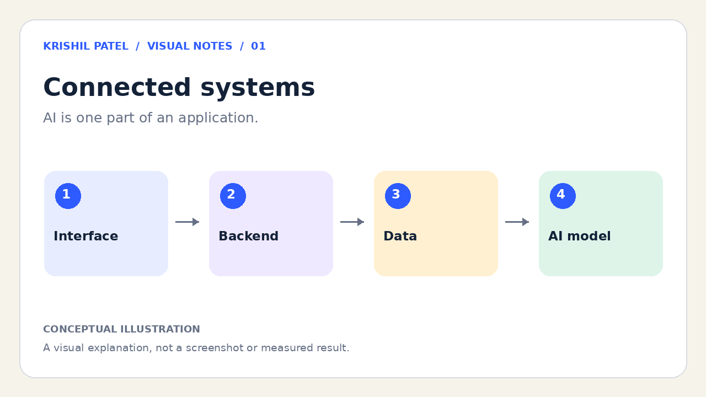
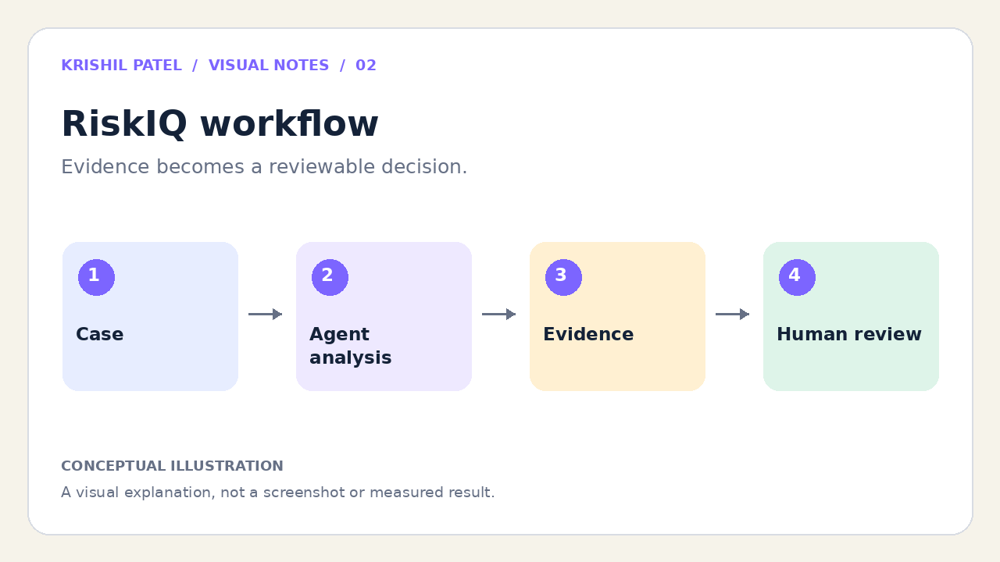
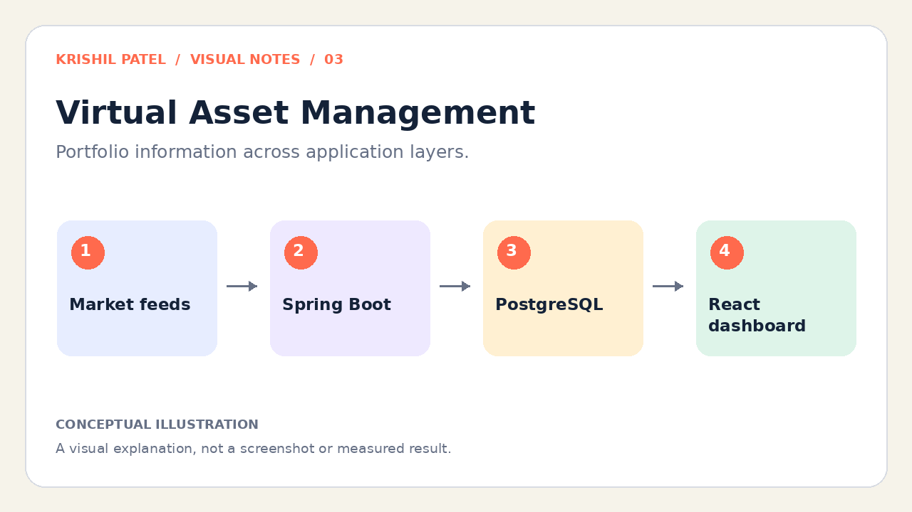
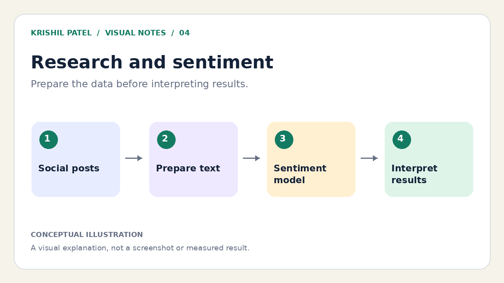
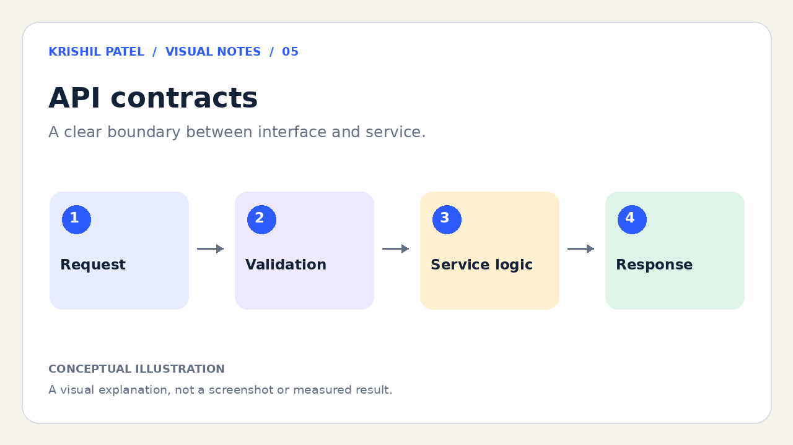
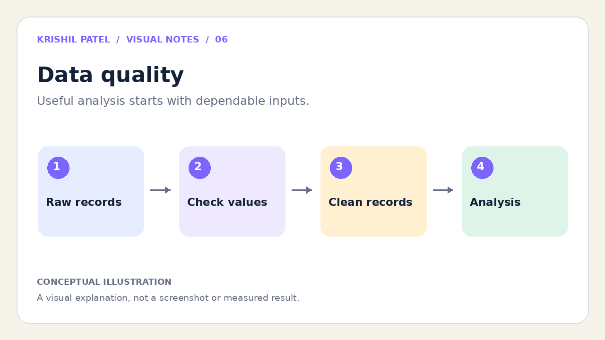
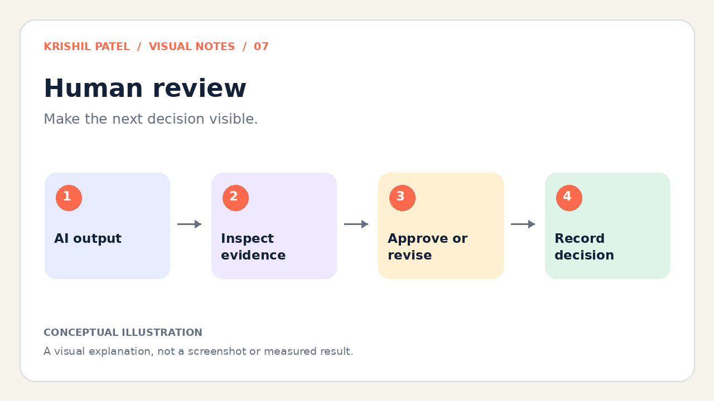
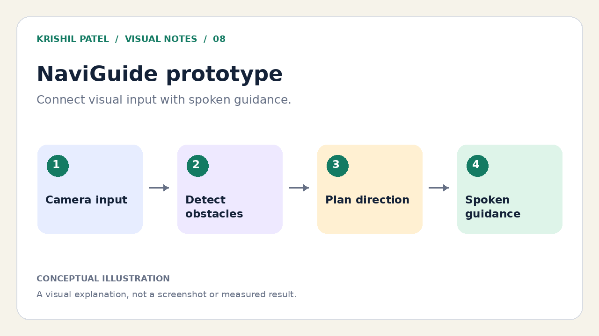
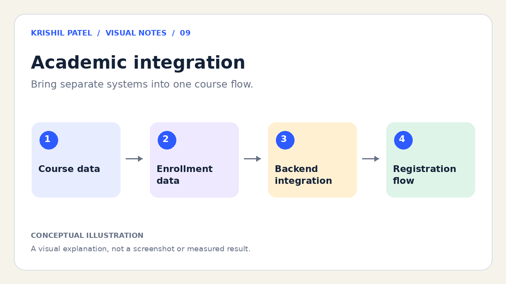
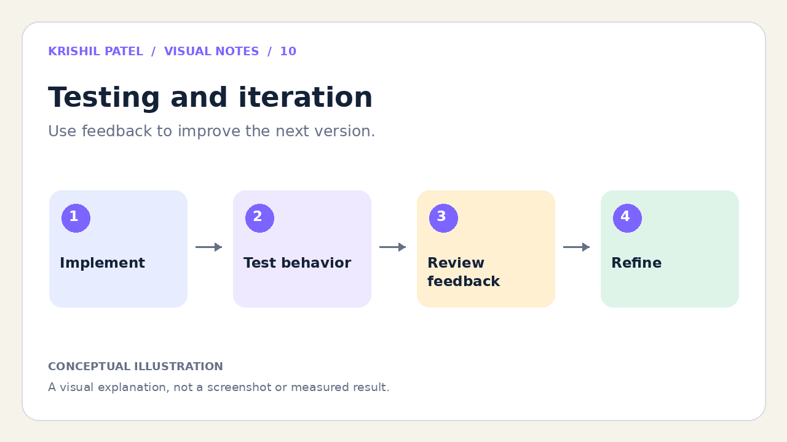

Multimedia
Projects in pictures, sound, and motion.
A different way to explore my work: ten visual notes, a short video tour, and an instrumental listening break.
01 / Watch
A visual portfolio tour
This 50-second video connects the main ideas in my portfolio, from RiskIQ and research to APIs, human review, and testing. I included it to give visitors a quick overview before they read the project details. It uses original explanatory illustrations and instrumental music, with no spoken narration.
50 seconds · Ten illustrated scenes · Optional instrumental soundtrack · Use the player controls to play, pause, or mute.
Read the video’s text alternative
- 00–05 seconds: Connected systems. AI is one part of an application. Interface → Backend → Data → AI model.
- 05–10 seconds: RiskIQ workflow. Evidence becomes a reviewable decision. Case → Agent analysis → Evidence → Human review.
- 10–15 seconds: Virtual Asset Management. Portfolio information across application layers. Market feeds → Spring Boot → PostgreSQL → React dashboard.
- 15–20 seconds: Research and sentiment. Prepare the data before interpreting results. Social posts → Prepare text → Sentiment model → Interpret results.
- 20–25 seconds: API contracts. A clear boundary between interface and service. Request → Validation → Service logic → Response.
- 25–30 seconds: Data quality. Useful analysis starts with dependable inputs. Raw records → Check values → Clean records → Analysis.
- 30–35 seconds: Human review. Make the next decision visible. AI output → Inspect evidence → Approve or revise → Record decision.
- 35–40 seconds: NaviGuide prototype. Connect visual input with spoken guidance. Camera input → Detect obstacles → Plan direction → Spoken guidance.
- 40–45 seconds: Academic integration. Bring separate systems into one course flow. Course data → Enrollment data → Backend integration → Registration flow.
- 45–50 seconds: Testing and iteration. Use feedback to improve the next version. Implement → Test behavior → Review feedback → Refine.
02 / Listen
A moment of focus
This original 30-second instrumental uses a repeating melody and a steady rhythm to represent the small, repeated steps involved in coding, testing, and refining a project. I included it as a brief listening break while exploring the portfolio.
Synthesized instrumental · No speech · No autoplay
Read the audio description
A soft, repeating sequence of bell-like notes plays over a sustained low tone. The piece fades in and out. There are no words or spoken information.
03 / Explore
Ten visual notes
Each image explains an aspect of the work described on this site. These are conceptual illustrations, rather than application screenshots. Select any image to open a larger version.

01. Connected systems
This illustration brings together the interface, backend, data, and model. It reflects the focus of this portfolio: understanding how the pieces of an AI application work together.

02. RiskIQ workflow
RiskIQ separates analysis from approval. This image highlights why I included human review and organized evidence in the project.

03. Virtual Asset Management
This simplified view connects market data to the portfolio dashboard. It represents the integration work behind my Virtual Asset Management project.

04. Research and sentiment
My NJIT research involved social-media text and sentiment analysis. This image emphasizes the preparation and interpretation that make model outputs useful.

05. API contracts
I use APIs to connect interfaces with backend services. This illustration shows why I pay attention to validation and clear request and response formats.

06. Data quality
Data preparation appears throughout my research and software work. This illustration shows the checks that come before drawing conclusions from a dataset.

07. Human review
RiskIQ includes opportunities for people to inspect and revise results. This image explains the role of a reviewer in an AI-assisted workflow.

08. NaviGuide prototype
NaviGuide explored indoor navigation with computer vision and robotics. This conceptual illustration represents the controlled prototype, which used simulated cone obstacles.

09. Academic integration
The academic registration project brought separate systems together. This image highlights the backend integration work and the importance of consistent data.

10. Testing and iteration
Testing and iteration connect my project work. I included this image to show how checking behavior and reviewing feedback guide the next change.
About these media
The ten illustrations, slideshow video, and synthesized instrumental were created for this portfolio with coding assistance. No third-party photographs, music recordings, or video clips are used on this page.